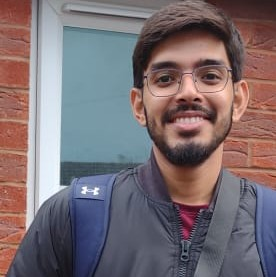

Currently
Deep learning for intracranial haemorrhage on head CT
Single-centre evaluation · ongoing
Radiology resident · Clinical AI
A radiologist in training who works on both sides of imaging AI: reading the scans, and testing the models that read them.
Resident, Diagnostic Radiology · Aga Khan University Hospital, Karachi

Karachi, PakistanGMC & PMDC registered
Currently
Single-centre evaluation · ongoing
Procedural phantom, no patient data. Drag the image to window it.
W 80 · L 40How I work: comparing model output against a reference read. Synthetic demonstration: simulated bleed, outlines and mask, not real data or a real model.
Quality improvement · TI-RADS
Thyroid ultrasound reports scored to ACR TI-RADS, first audit to re-audit
Publications
5
Publications, plus 2 submitted and presented
Recognition
01 · About
Much of my work is turning what radiologists need day to day into requirements an engineering team can build against.
I am a third-year diagnostic radiology resident at Aga Khan University Hospital in Karachi. My days are spent reporting CT, MRI, ultrasound, fluoroscopy and nuclear medicine, including emergency on-call work.
Alongside residency I work on clinical AI for imaging. I set quality thresholds for training data, design validation studies and write documentation to regulatory standards.
Quality improvement came first. A thyroid ultrasound audit I led raised TI-RADS reporting compliance from 30% to 96%. In 2026 the resident body elected me as its representative. I write Python for imaging data and build small tools of my own.
Third-year diagnostic radiology resident (FCPS) at AKUH. GMC and PMDC registered.
Designs validation studies, sets quality thresholds for imaging training data and writes regulatory-grade documentation.
Closed-loop quality improvement (TI-RADS compliance 30% → 96%), five publications, elected resident representative.
02 · Work
Research, quality improvement and tools. Images in this section are synthetic phantoms, not patient scans.
A single-centre evaluation of a deep learning model that detects and subtypes intracranial haemorrhage on non-contrast head CT. After an internal audit of the first analysis, I restarted the study with an integrity check on each model, one prespecified endpoint and a planned two-reader neuroradiology reference standard.
A planned systematic review and meta-analysis. I have built a reproducible PubMed search pipeline that separates quantitative synthetic MRI from GAN-generated images, two meanings the term shares, so that screening starts from a clean evidence base.
First author on a closed-loop audit of ACR TI-RADS scoring in thyroid ultrasound reports. After department teaching and TI-RADS templates in PACS, the re-audit showed compliance rising from 30% to 96%. Posters at the 5th International RRF Conference and Health Asia 2024, Karachi.
An AI-enabled mentorship platform that connects radiology residents with local and international mentors. First Prize, AKU Postgraduate Medical Education Annual Conference 2024 ("Use of AI in PGME").
Diagnostic performance of CEM in presurgical staging, against histopathology, at a tertiary centre. Oral presentation at the International Radiology Resident Forum 2024; manuscript submitted.
Plug-and-play automatic backup for Windows that starts when an external drive is connected. Native setup window, no background services, MIT licence.
03 · Experience
International AI medical-imaging initiative · remote
Quality thresholds for imaging training data, validation study design and regulatory-grade documentation; turning radiology workflow needs into technical requirements for engineering teams.
Aga Khan University Hospital, Karachi
Elected Resident, Jan – Jun 2026: represented residents at Programme Director meetings, ran every resident rota, handled resident concerns and drafted the 2026 first-year orientation plan.
Teaching through journal clubs, case presentations and bedside sessions. My journal club on workplace-based assessment led the programme directors to plan WBA implementation.
Sindh Institute of Urology and Transplantation, Karachi
Dr. Ruth K. M. Pfau Civil Hospital, Karachi
Medicine, medical ICU, nephrology, general surgery and neurosurgery. Best Intern Award, General Medicine.
Dow University of Health Sciences, Karachi
CGPA 3.88, top 10% of class; 4.0 GPA in the final year.
04 · Publications
05 · Credentials
06 · Contact
Roles, research collaboration or fellowships.